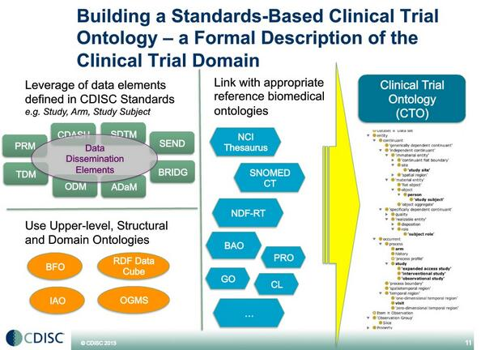
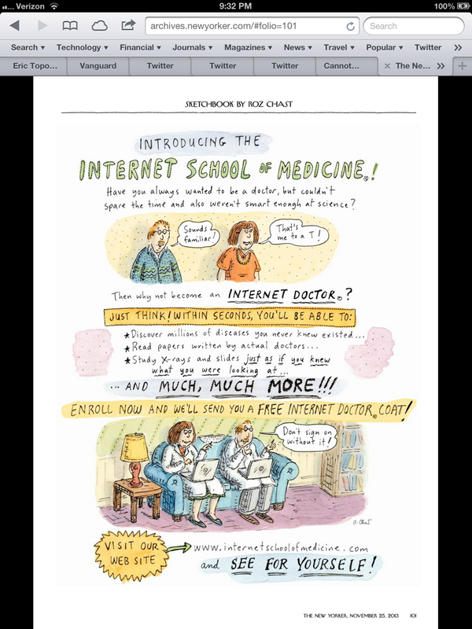
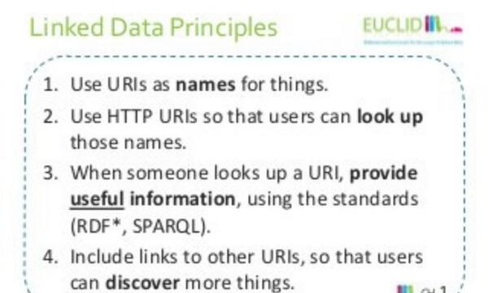
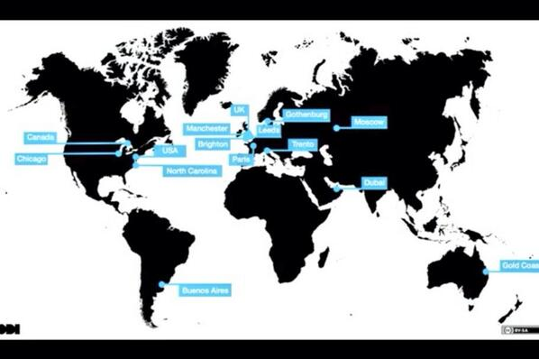

November 2013
Ending the week by reading 2 nice posts challenging API:s ruben.verborgh.org/blog/2013/11/2… strehle.de/tim/weblog/arc… Kudos @RubenVerborgh @tistre
Added a link to @csarven's "URI Patterns for Statistical Linked Data" to on my URI Design page kerfors.blogspot.se/p/uri-design.h… #linkeddata
@Lilly_COI @Novartis @pfizer How about working together w/ NIH/NLM/FDA to structure #clinicaltrials info upfront? twitter.com/kerfors/status…
Vetenskapsrådet ska ta fram nationella riktlinjer för open access -@Vetenskapsradet vr.se/franvetenskaps… via @frepa #oppnadata
How about combining: @QlikView's #NaturalAnalytics qlikview.com/us/videos/how-… with #RDFDataCube w3.org/TR/vocab-data-… ?
A interim Swedish legislation enable #LifeGene to legally collect personal data w/o pre-specified research lifescience.idg.se/2.1763/1.534110 [Swe]
A Review of 3 Consent Management Problems in Biobanking info.5amsolutions.com/blog/bid/15482… < Interesting blog post by @jpmccu
Updated my URI Design page with links to Draft documents for UK and Sweden kerfors.blogspot.se/p/uri-design.h… #LinkedData
@BernHyland Next step: Have more voices describing the value of URIs > textstring numbers for #clinicaltrials to @EFPIA @US_FDA ?
Very nice -> MT @BenGee: my #frontend case study about the @OrdnanceSurvey's new #linkeddata service: bnowack.de/#life-stream/p…
Draft #URI patterns bit.ly/11dkp1e from @UKGovLD <- Nice, will add to URI design page kerfors.blogspot.se/p/uri-design.h… #LinkedData
Working on my slides for #swat4ls swat4ls.org/workshops/edin… '"Pushing back" standards and standard org in a #SemanticWeb enabled world'
Having a cup of coffee before a late meeting catching up with the busy feed from today's #nordicapis #ind13 @internetdagarna
I've just added my first two Coursera accomplishments to my LinkedIn Profile se.linkedin.com/in/kerfors/
+1 RT @iinek: #storify summary of Open Data Session at Internetdagarna, Stockholm, 2013 sfy.co/eVJE #oppnadata #ind13
"Wikipedia for relevancy" wp.me/p10LZV-30Zu Open alt. to Google Knowledge Graph, FB Open Graph, Gravity Ontology And Microsoft Satori
Even though a lot of work it's a great to do MOOCs on Clinical Trial edx.org/course/harvard… and HTA sheffield.ac.uk/scharr/prospec… in parallel
Time for videos w/ @bengoldacre and @fgodlee in the MOOC on HTA sheffield.ac.uk/scharr/prospec… #htamooc
#ToRead How To Tell Stuff To A Computer - The Enigmatic Art of Knowledge Representation lisperati.com/tellstuff/inde… by Conrad Barski via @danbri
Thinking of a new blog post: URIs for Clinical Trials, building on my comment efpia.eu/blog/114/51/Ch… and email thread lists.w3.org/Archives/Publi…
Started my first list on Twiiter twitter.com/kerfors/lists/… w/ inspiring women in info technology / data science. Who do I miss?
@carlbildt Dock mera att göra i Sverige: #oppnadata #lankadedata Se mera om hur @webfoundation använder #linkeddata data.webfoundation.org
@richardohrvall "hyperdata"? Kolla in #lankadedata principer och semantic web standards :) kerfors.blogspot.se/2013/05/three-…
Commented @EFPIA's blog "Change is Underway" efpia.eu/blog/114/51/Ch… re. "universal numbering" <- Use URIs #LinkedData for #ctdata
Looking forward to see Clinical Trial Ontology stanford.app.box.com/s/2qmvk4n2xqw4… #CDISC #interchange2013

Excellent presentation on Clinical Trials Data and #SemanticWeb, Ravi Shankar, Stanford, #CDISC #Interchange2013 stanford.box.com/s/2qmvk4n2xqw4…
"Think of Segmentazid world, not Undeveloped/Developed countries -@HansRosling #PaleyIC The Data Overthrow fora.tv/v/c19334
"I was getting paid to save management from the distasteful act of listening to their own employees." -@cshirky shirky.com/weblog/2013/11…
Anyone seen any "Facebook-Timeline look-a-like" views of the #PROV #metadata w3.org/TR/prov-o/ as a Data-Timeline?
Handle with care: Data privacy as a corporate responsibility bit.ly/18QDED5 via @RolandReckons @dbarthjones <- #InfoAccountability
Lots of nice buzz on #oppnadata #öppnadata i.e #opendata in Swedish Looking forward to much more on #ind13 next week from @internetdagarna
@Chris_Evelo Well, "you can help me" is not what RCTs are about. The MOOC on RCT from Harvard introduce me to en.m.wikipedia.org/wiki/Clinical_…
Represent Clinical Trial Participants choises in Informed Consent using Ontologies, Semantic web standards kerfors.blogspot.se/2013/11/de-ide…
The Web Science MOOC #FLwebsci @UoSFLwebsci reminds me of my friend @futuramb who introduced me to "The WWW" back in 1994
Nice to see two Swedes @tommy_palm @HansRosling in tomorrow's: IC2013 New York The Data Overthrow fora.tv/conference/ic2… #PaleyIC
@jessiet1023 v. interesting I'll get in contact w Adels Grando re. kerfors.blogspot.se/2013/11/de-ide…
@titusschleyer @CKuziemsky @AMIAinformatics Tip: Use @Eventifier Used by another conf for their social media eventifier.co/event/iswc2013
@alsadvocacy @Lilly_COI @ReginaHolliday @sharonfterry Any ideas for how to continue this discussion?
Great to see the comments and +1:s on my blog: De-identifcation and Informed Consent in Clinical Trials kerfors.blogspot.se/2013/11/de-ide…
Dark evening on the bus home catching up with two busy feeds: #health2eu #AMIA2013 Keep them coming :)
MT @eClinical_Jen: I'm presenting info on Clinical Trial Technology today @msPartner <- Nice, tell them about #SemanticWeb #LinkedData :-)
-1 RT @jessiet1023: #amia2013 S49 KHughes EHRs aren't interoperable, aren't even intraoperable - can't even talk to themselves
Interesting, keep us posted pls > RT @PaulZh: Second day of #OpenCube kick-off. Making linked statistics simple, we hope :-)
MT @martenmickos: API-centric architecture and cloud-centric deployment informationweek.com/mobile/mobile-… <- And entity-centric data
De-identification and Informed Consent in Clinical Trial Data Transparency kerfors.blogspot.se/2013/11/de-ide… Kudos to @RebarInter #PACCR
:-) RT @EricTopol: The Internet School of Medicine #meded Enroll now and get a free internet doctor coat @NewYorker

#amiauid Experiences of Swedish Personal id Number: Rethinking the Meaning of Id:s in Info Infrastructures sites.google.com/site/bosundgre…
MT @titusschleyer: #AMIA2013 Epic released API open.epic.com <How about #LinkedData? slideshare.net/EUCLIDproject/…

@slabkoff @ePatientDave Checkout #PACCR (Patients at Center of Clinical Research) discussion last week hosted by @Lilly_COI
Dat dat-data.com a "Git-like tool for tabular data version control" <- Use case for @maxogden: Clinical Trial Data #ctdata
@jahendler time to pick up your great idea #InfoAccountability dig.csail.mit.edu/2008/06/info-a… ? See also @djweitzner's nice dig.csail.mit.edu/2013/07/pclob-…
Phase 2 of the FDA/PhUSE Semantic Techn project: Representing #CDISC Protocol Representation Model in RDF phusewiki.org/wiki/index.php…
"You Are Your Data. And you should demand the right to use it." #quantifiedself slate.com/articles/techn… via @jschneider
+1 RT @andreaskrohn: Att driva ett framgångsrikt öppna data projekt bit.ly/1arjpie #öppnadata #oppnadata
.@Acando @bibjorken See data catalog and dataset description standards w3.org/wiki/WebSchema… A key Info Mgmt aspect of #BigData
MT @jahendler Semantics for Big Data Fall Symposium starting tomorrow - should be exciting #s4bd <- Interesting, will follow
To-Read about "Re-Identification and De-identification Practice" from Harvard Law School HT @dbarthjones @ReginaHolliday #paccr
.@kerusan An Intro to PROV provbook.org PROV wrapper for Github git2prov.org And by Oracle m.oracle.com/us/corporate/p…
Cool > @dkmj: Startups pitchar till alla som sitter i förstaklass. Turkish Airlines går före: bit.ly/HOicrh via @RobinTeigland
Cool lunch with @kerusan with lots of "meta" ideas and some Cappuccino cappuccino-project.org (ping @erikforsberg1)
A, for me new, EU project on big data called BIG big-project.eu. I will be interviewed today abt "secondary use of health care data"
.@agentGav's keynote from #strataconf strataconf.com/strataeu2013/p… <- Wow Gothenburg as a ODI Node #gbgftw #oppnadata

+10 RT @jervenbolleman: Model once query everywhere a slogan for #sparql plus.google.com/11555779470016…
To-Read: "Pharmaceutical Knowledge Governance: A Human Rights Perspective" law.utoronto.ca/scholarship-pu…
Are surrogate outcomes used/reported too uncritically at HTA agencies? contextmattersinc.com/are-we-getting… #htamooc via @hildabast @pash22
Downloading my certificate from the MOOC on #Metadata made me think of my 10 year old presentation on @DublinCore slideshare.net/kerfors/metada…
:-) RT @rczink: If Metallica and #CDISC went on tour together, you'd get this shirt goo.gl/tl8xJA #metadata @CDISC via @bobdc
White House promotes new partnerships as it seeks to make better use of ‘big data’ wapo.st/16WG9Go via @washingtonpost
Interesting health care and clinical research big data initiatives mentioned in the #Data2Action live stream live.science360.gov/1/
+1 Open APIs - Risks and Rewards video w/ @hampusbrynolf @andreaskrohn @travisspencer bit.ly/1iYResT via @dopterse
"Cool things the NHS is doing with data" blog from @OpenDataBMC on @tkelsey1's #strataconf keynote blogs.biomedcentral.com/bmcblog/2013/1…
På önskelistan: URI:er för t.ex ledamöterna i @Sverigesriksdag som en del #oppnadata arbetet utveckling.riksdagen.se/2013/forbattri…
Looking forward to follow the MOOC in Web Science futurelearn.com/courses/web-sc… Many of the presenters I remember from the WWW2006 conference
MT @NickJewell: #LinkedData will be available in 2014 for NHS primary healthcare. <- See @nhsdevnet's blog post developer.nhs.uk/library/techno…
One more interesting blog post from NHS: #LinkedData - Health Developer Network shar.es/8gbjr via @nhsdevnet
I've missed this one (from Jan 2013): @NHSChoices's blog on the #SemanticWeb blogs.nhs.uk/choices-blog/2…
Very nice to watch the live stream from #Strataconf London with three great women on stage this morning @kaythaney @fhr @Felienne
MT @PharmaTimes: ABPI improve payment transparency .. single, publicly searchable, central database dlvr.it/4HxlLK <- Triple store?
+1 RT @pgroth: Trip Report: #iswc2013 - International Semantic Web Conference 2013 thinklinks.wordpress.com/2013/11/05/tri… #semtech #linkedata
Now they are searching the "archives of clinical studies" in the Swedish/Danish TV series #Bron en.wikipedia.org/wiki/The_Bridg…
CDISC end-to-end blog post from Jozef Aerts, #xml4Pharma: Submissions in XML cdisc-end-to-end.blogspot.se/2013/11/submis… #CDISC
Awesome history from 1997 > Evolution of Systems Infrastructure at Google youtu.be/gCGvneeHbPQ via @mhausenblas
Looks like several of the folks I'm following are heading to London for #strataconf I hope for some live sessions on strataconf.com/strataeu2013/
+1 "any data can be read by a machine" what s important to openness is "whether the machine can usefully process it" opengovdata.io/2012-02/page/5…
@KMPS_NN Tip: Use @Storify foru social media stuff from #interchange2013. I used it for a my conf. repors: storify.com/kerfors
@KMPS_NN Machine *Processable* (Data reasonably structured to allow automated processing) even better, see opengovdata.io/2012-02/page/5…
"Most of the benefits of open data will accrue to consumers/citizens, not to investors/firms" sunlightfoundation.com/blog/2013/11/0… via @EllnMllr @JeniT
Watching BBC Documentary: The Price of Life youtu.be/OI0sMB9jwiM as part the MOOC on HTA sheffield.ac.uk/scharr/prospec… #htamooc
Prep. for our local AZ Mölndal study group to discuss tomorrow Case 1 in the MOOC: Fundamentals of Clinical Trials edx.org/course/harvard…
Very nice: Basic Vocabulary for schema.org and Structured Data seoskeptic.com/basic-vocabula… @aaranged
On the train again so back to English and catching up with the nice feed from #interchange2013 cdisc.org/stuff/contentm…
Nu kommer #oppnadata upppå Dialogforum #miljöteknik om öppen innovation, innovationstävlingar, crowdfunding regeringen.se/sb/d/17990/a/2…
"Father of open innovation" @HenryChesbrough refereras på dagens Diallogfourm #miljöteknik av @DoctorBeng
Spännande exempel: @Kickstarter och @fundedbyme som @RobinTeigeand nämner slideshare.net/eteigland/crow… på dagens Dialogforum för #miljöteknik
I'm in a different kind of meeting: Open Innovation in environmental technology regeringen.se/sb/d/17992/a/2… Will tweet in Swedish #miljoeteknik
Klassifikationer av Vårdåtgärder (KVÅ) socialstyrelsen.se/klassificering… looks like a perfect case for #SKOS w3.org/2004/02/skos/ and #LinkedData
.@KMPS_NN Great to see your tweets from #Interchange2013. Nice reading on the topic of "More than words" sciencecareers.sciencemag.org/career_magazin…
Job @LillyPad (Eli Lilly) qualifications: Semantic Web standards (OWL, RDF, Sparql) and the linked data paradigm ift.tt/1fhToDT
Jag är i centrala Stockholm onsdag 6 nov. Ledig 16 - 18. Någon som vill fika o prata #LankadeData #LinkedData #SemanticWeb ?
CDISC Standards in RDF prweb.com/releases/PhUSE… Should be of great interest for CROs Ping @PPDCRO @Quintiles @Parexel @Cognizant
CDISC Standards in RDF prweb.com/releases/PhUSE… Kudos: Frederik Malfait imos-consulting.com Phil Ashworth @TopQuadrant Geoff Low @Medidata
I pointed my son to @Open_PHACS Linked Data APIs dev.openphacts.org/docs for his project in the AppDev course kdb-5.liu.se/liu/fil/kp_det…